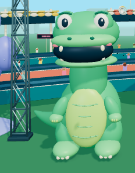
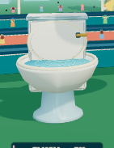
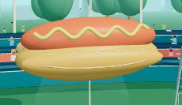
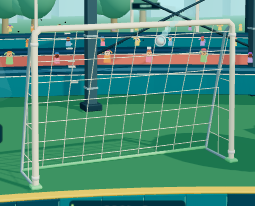
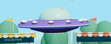
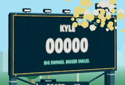
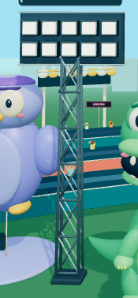
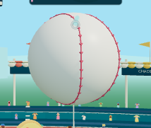
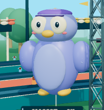
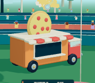

Kyle’s Home Run Chaos · Stadium toys
Ten original Blender assets · actual gameplay-camera captures during ball approach · no camera or target-transform changes

Hungry dino14,440 triangles · 3 material primitives · no textures
Chaos toilet5,076 triangles · 4 material primitives · no textures
Inflatable hot dog4,688 triangles · 3 material primitives · no textures
Soccer goal1,552 triangles · 3 material primitives · no textures
UFO7,232 triangles · 15 material primitives · no textures
Scoreboard6,160 triangles · 3 material primitives · no textures
Light tower9,384 triangles · 2 material primitives · no textures
Inflatable baseball6,100 triangles · 3 material primitives · no textures
Wobbly mascot7,176 triangles · 3 material primitives · no textures
Pizza truck10,980 triangles · 4 material primitives · no textures